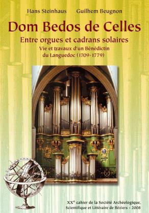

Dom Bedos de Celles
Entre orgues et cadrans solaires
Hans Steinhaus - Guilhem Beugnon

Dom Bedos de Celles
|
|
|  |
DOM BEDOS DE CELLES. Auteur : Hans Steinhaus - Guilhem Beugnon Adresse de l'auteur pour commander l'ouvrage : Télécharger un bon de commande au format PDF afin de l'imprimer avant de l'envoyer accompagné de votre réglement. |
En 2001, Hans Steinhaus de Bonn a écrit un livre intitulé « Wege zu Dom Bédos »1, titre que l'on peut traduire plus ou moins heureusement par « Chemins vers Dom Bedos ». Il manquait à cet ouvrage fort érudit une traduction en français que l'on aurait pu attendre des siècles si Guilhem Beugnon, enseignant à Caux dans l'Hérault, ne s'était attelé à la tâche avec une ardeur sans pareille. L'ouvrage primitif d'Hans Steinhaus n'est donc pas seulement traduit, il est également « [...] remanié et largement augmenté, fruit d'un échange internautique entre Bonn et Caux [...] », afin de dresser un « portrait [qui] se veut aussi une invitation au partage franco-allemand de la culture de l'orgue ». L'Hydraule, qui, depuis des années, s'essaie à la publication du plus connu des ouvrages du facteur bénédictin, se devait donc de faire l'éloge de cette monographie, moins par devoir que par la conviction de la qualité du propos. Car si d'autres ouvrages, suite à la restauration de l'instrument de Sainte Croix de Bordeaux il y a quelques années, n'ont pas omis dévoquer Dom Bedos, il manquait encore, en langue française, une compilation de tout ce qui est actuellement connu du mauriste. En cela, autant le travail d'Hans Steinhaus que la traduction et les apports des deux compères à cheval sur le Rhin, apportent une pierre non négligeable à la connaissance de la vie et des productions d'un moine dont il est entendu que peu d'éléments de son histoire ont traversé le temps.
Outre le rédacteur du traité c'est donc d'abord l'expert en facture et en gnomonique qu'il est donné de voir portraituré. C'est aussi l'ami et le compère de François l'Épine fils, dont on a plaisir de constater son attachement à mettre toujours plus en perspective la probité de sa foi avant les intérêts de sa personne. C'est donc, évidemment, un ouvrage à posséder impérativement puisque sans égal sur le sujet en français.
(1) Hans Steinhaus (Hg.), Wege zu Dom Bédos. Daten - Dokumente - Deutungsversuche. Verlag Dohr Köln. ISBN 3-925366-85-7
|
Hans Steinhaus. Ancien professeur de lycée, organologue et organiste, Hans Steinhaus est l'auteur de nombreuses publications organologiques, dont plusieurs relatives à l'orgue français (Dom Bedos, les Clicquot, les Isnard, Cavaillé-Coll) et sa musique (Marcel Dupré). Il a traduit en allemand Marcel Dupré raconte... (1981) et Mes souvenirs de Louis Vierne (2004). |
Guilhem Beugnon. Enseignant passionné d'histoire locale, Guilhem Beugnon est l'auteur de plusieurs monographies communales et d'une biographie du général d'Empire Henri de Carrion-Nisas (XVIIème Cahier de la Société archéologique, scientifique et littéraire de Béziers). À l'occasion de longues missions à l'étranger, il s'est intéressé à l'histoire des Français à Trincomalee (Sri Lanka) et sur l'île de Maragnan (Sâo Luis / Brésil) au cours du XVIIe siècle. |
|
RÉSUMÉ Né dans le village languedocien de Caux aux premiers jours du glacial hiver 1709, Dom François Bedos de Celles est avant tout connu comme l'auteur d'un inégalable traité sur L'Art de la Facture d'Orgues. Bible des organiers, le « Dom Bedos » a permis à Pascal Quoirin de redonner sa voix au second testament du savant bénédictin : l'orgue majestueux de l'abbaye Sainte-Croix de Bordeaux achevé en 1748 et patiemment restauré de 1985 à 1996. Artisan, théoricien et expert de la facture d'orgues, Dom Bedos l'était aussi de celle des cadrans solaires. Depuis sa sortie en 1760, la Gnomonique pratique n'a cessé d'être un ouvrage de référence réédité jusqu'à nos jours. Première monographie en langue française consacrée à Dom Bedos de Celles, le présent ouvrage aborde, avec rigueur et minutie, les multiples facettes d'un savant du Siècle des Lumières dont le génie continue d'éclairer le monde des organiers. |
ABSTRACT Born in the first days of the freezing winter of 1709 in the village of Caux (Languedoc), Dom Francois Bedos de Celles is known primarily as the author of the unparalleled treatise L'Art du Facteur d'Orgues. Known as the "bible" of organ-makers, it enabled Pascal Quoirin to restore the Benedictine scholar's second testament: the majestic organ of the Sainte-Croix Abbey of Bordeaux, completed in 1748 and patiently brought back to life from 1985-1996. A craftsman, theoretician and expert in organ-building, Dom Bedos was equally adept in the manufacture of sundials. Ever since its publication in 1760, La Gnomonique pratique remains an important reference work that has continues to be published in new éditions. As the first French-language monograph to be dedicated to Dom Bedos de Celles, the présent work offers an exhaustive and detailed treatment of the différent sides to this scholar of the Age of Enlightenment, whose genius continues to illuminate the world of organ-makers. |
ZUSAMMENFASSUNG Dom Bedos de Celles, in den ersten, eiskalten Tagen des jahres 1709 in Caux, einem Dorf im Languedoc, geboren, ist vor allem bekannt als Verfasser eines unvergleichlichen Lehrbuchs über die Kunst des Orgelbauers. Mit Hilfe dieser "Bibel der Orgelbauer", einfach der Dom Bedos genannt, konnte Pasqual Quoirin der majestätischen Orgel der ehem. Abteikirche Sainte-Croix in Bordeaux, vollendet 1748 und in den jahren 1985-1996 mit aller Sorgfalt restauriert, ihre Stimme wiedergeben. Dom Bedos, Kunsthandwerker, Theoretiker und Orgelsachverständiger, war auch auf dem Gebiet der Sonnenuhren zuständig: seit dem ersten Erscheinen im jahre 1760 ist seine Gnomonique pratique (Praktische Sonnenuhrenkunde) ein mehrfach aufgelegtes Standardwerk geworden. Als erste französischsprachige Monographie über Dom Bedos de Celles geht das vorliegende Werk in größmöglicher Genauigkeit den vielfältigen Facetten eines Gelehrten aus dem Siècle des Lumières nach, dessen Genie auch künftig die Welt der Orgelbauer aufklären wird. |
||
|
Mots clefs : Dom François Bedos de Celles, facture d'orgues, gnomonique, cadran solaires, bénédictin, ordre de Saint-Benoît, congrégation de Saint-Maur, L'Épine, Siècle des Lumières, Languedoc, Bordeaux, Saint-Denis. |
Keywords : Dom François Bedos de Celles, organ manufacture, gnomonics, sundial, Benedictine, the Order of Saint-Benoît, Saint-Maur, L'Épine, the Age of Enlightenment, Languedoc, Bordeaux, Saint-Denis. |
Schlagwürter : Dom François Bedos de Celles, Orgelbau, Gnomonik, Sonnenuhren, Aufklärungszeitalter, Benediktiner, Benediktinerorden, Mauriner-Kongregation, L'Épine, Languedoc, Bordeaux, Saint-Denis. |
Ouvrage de deux cent pages au format 21 × 29,7 cm enrichi de nombreuses illustrations (dont plusieurs fac-similés) et de tableaux généalogiques.
|
Préfaces croisées de Denis Savoie, Hans Gerd Klais et Frédéric Muñoz Avant-propos Remerciements et notes préliminaires I - Ses origines II - Sa vie III - Ses expertises |
IV - Ses orgues V - Ses écrits VI - La musique d'orgue VII - Quelques orgues du temps de Dom Bedos VIII - Compositions d'orgues Notes / Glossaire / Bibliographie / Sources Postface par Daniel Birouste / Index des noms de lieux et de personnes |
1ère de couverture
Orgue Dom Bedos (1745) - Pascal Quoirin (1997)
de l'ancienne église abbatiale Sainte-Croix de Bordeaux
(Cliché Jacques Péré / photo FURAX Bordeaux)
« Principales notions de la Sphere »
(Dom Bedos de Celles, « La Gnomonique pratique », Paris, 1774, pl. 2, fig. 10)
4ème de couverture
Fondre l'étain ou l'étoffe pour les tuyaux d'orgue en métal
(Dom Bedos de Celles, « L'Art du Facteur d'Orgues », II, Paris 1770, pl. 66, fig. 1)
Empreinte du sceau de Dom Bedos
(Bibliothèque municipale de Bordeaux, 18 septembre 1759, Ms 828/XX)